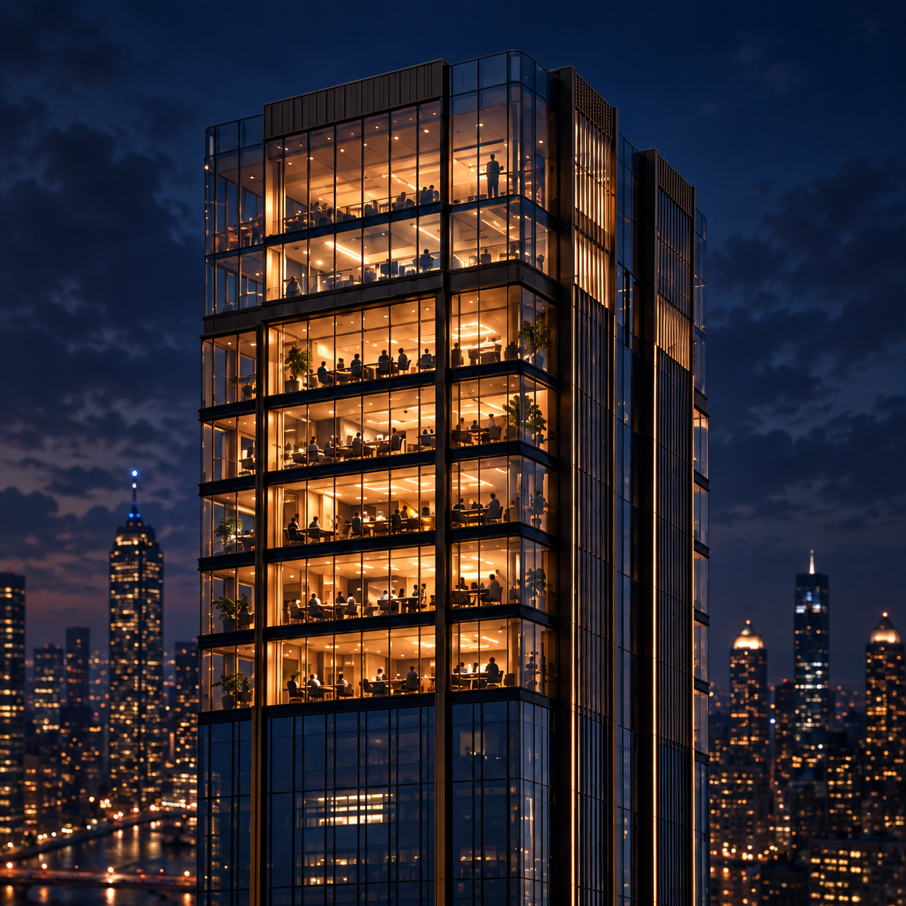

AI Tower
A desktop app that runs a small office of AI employees on your own computer, on your own files. Each floor is a project; tell Ed, your executive director, what you want built.
AI Tower runs on Windows and Apple Silicon Macs.
Needs Claude Code installed and signed in. All releases
What’s new
- Your yes on a call to a friend now lasts 48 hours, and you can set the time. The assistant still checks their calling hours and your limits when it dials.
- In Cyberpunk the floor names sit on small smoked-glass signs, and faces change with the Look the moment you click the lamp.
- The Conversation and Technical details always keep room to read and type, and a click anywhere in the terminal types into it.
- The Library’s House Rules and how-it-works chapters cover calling and emailing friends, adding skills, and the assistant’s own cloud account.
Windows: first open
Double-click the installer. It installs for you alone, into your own user folder, so Windows does not ask for an administrator password.
This build is not code-signed. SmartScreen shows a blue “Windows protected your PC” box the first time. Click More info → Run anyway. It does not come back.
On some Windows 11 machines Smart App Control blocks unsigned programs outright, with no Run anyway button. It can only be turned off, in Windows Security → App & browser control → Smart App Control.
Mac: first open
Apple Silicon (M1 and later) only. The app is unsigned, so macOS asks once before it opens.
- Unzip, and drag AI Tower into Applications.
- Right-click (or Control-click) AI Tower and choose Open, then Open again in the dialog. This is needed once; after that it opens with a double-click.
- On macOS 15 (Sequoia) and later there is no Open in that menu. Double-click AI Tower, press Done on the warning, then open System Settings > Privacy & Security, scroll down, and press Open Anyway next to AI Tower.
If macOS says the app “is damaged and can’t be opened”, the download was quarantined. In Terminal:
xattr -dr com.apple.quarantine "/Applications/AI Tower.app"The Mac app cannot update itself. For a new version, download it here, unzip it, and drag it into Applications over the old one. Your workspace is a separate folder and is not touched.
Before you start
Claude Code must be installed and signed in; the default desks use it. Get it at claude.com/code. The app checks for it on the welcome screen and walks you through it if it is missing.
AI Tower keeps everything in a workspace folder you choose, and uploads nothing on its own.